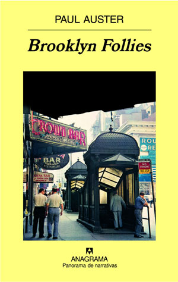
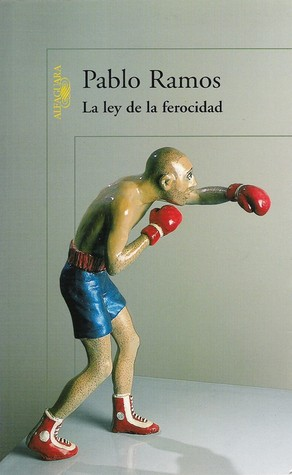

Samuel Rodríguez Medina
Web Developer
I was born in 1989 in the Canary Islands. After studying Linguistics I moved to Barcelona to do a Masters in Publishing. Now I code.
Contact meMy favourite books
|  |
Brooklyn Foolies60-year-old Nathan Glass returns to Brooklyn after his wife has left him. |

|
Kafka On The ShoreKafka on the Shore demonstrates Murakami's typical blend of popular culture, mundane detail, magical realism, suspense, humor, an involved plot, and potent sexuality. |
|  |
La ley de la ferocidadPablo Ramos returns to the fray with his alter ego, Gabriel. The boy from El origen de la tristeza, is now a successful man, but miserable on the inside. |
About this website
This website has been built with HTML & CSS